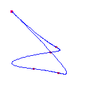
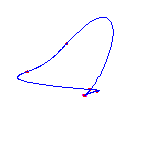
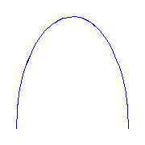

Since 6=3(4-2), a rational plane quartic has 6 ramification points, counted with multiplicity. The table below gives names for the different types of ramification points possible for quartic curves, together with the lowest order terms in a parameterization of the ramification.
| Name | Index | Partition | Germ |
|---|---|---|---|
| Flex | (0,1,3) | 1 | (s,s3) |
| Cusp | (0,2,3) | 11 | (s2,s3) |
| Planar | (0,1,4) | 2 | (s,s3) |
| Claw | (0,2,4) | 21 | (s2,s4) |
| Box | (0,3,4) | 22 | (s3,s4) |
By Theorem 2.4 of [So00b] (and further calculations), given any choice of real points of ramification and indices at those points whose degrees sum to 6, all parameterised rational curves with the prescribed ramification will be real. Here are examples of maximally inflected quartic curves with all possibilities for the ramification. We display the pictures with commentary below. By the Klein and Plücker formulas a maximally inflected quartic with only cusps and flexes may have either one or no crossings; except if there are 3 cusps, then there are no crossings. All of these possibilities occur.
6 flexes
By the Schubert calculus, there will be exactly 5 curves with 6 given points
of simple inflection.
Computing a single example, we see that two of these will have no crossings
and three will have a single crossing.
These examples will necessarily have 3 (respectively) 2 isolated points.
Below, we display one example of each, when the inflection points are at (-3,
-1, 0, 1, 3,
infinity).
The flexes in all examples are marked with red circles.
These show that both possibilities allowed by the Klein and Plücker formulas
occur.
(The curve on the right has both flexes at the crossing.
This does not happen in general.)
 |
For a given choice of 6 positions of the flexes, there are 5 different curves. We choose positions of the flexes so the resulting curves do not exhibit any symmetry
 |
 |  |
One cusp and 4 flexes
If we specify one cusp and 4 flexes, then the Schubert calculus ensures that there
are 3 curves.
One will have no crossings, and 2 will have one crossing.
Below, we display one instance of each, where the cusp is at infinity and the
flexes are at -3,-1,1,3.
 |
 |
Two cusps and 2 flexes
If we specify two cusps and 2 flexes, then the Schubert calculus ensures that there
are 2 curves.
There are two deformation classes of choices of cusps and flexes along
S1, either (A) cusp, cusp, inflection, inflection, or else
(B) cusp, inflection, cusp, inflection.
In case (A), there will always be one curve with a crossing and one with no crossings;
and in case (B), both curves will have a crossing.
We display examples of both situations below.
The set of cusps and flexes are -1, 0, 1, and infinity in these
examples.
 |
 |
 |
These curves are all self-dual.
Three cusps
There is only one quartic curve which has 3 cusps, and it necessarily has no crossings.
It is dual to the triply inflected rational cubic with an isolated point.
We show it below.
 |
Planar Points We now consider curves with a planar point. The planar points are marked in green circles. I do not know what the analog of Klein's formula will give us for restrictions on these curves. However, the curves below exhaust all possibilities for quartics. The challenge is to explain why only these occur.
One planar point and four flexes
For a given choice of planar point and 4 flexes, the Schubert calculus gives
two curves.
There will be one each with a crossing and with no crossings.
Consider the case of 6 inflection points when two adjacent inflection points collide.
The Schubert calculus tells us that there will be either one cusp or one planar point
created.
These curves show that one of the curves with no crossings develops a cusp and
one develops a planar point, whereas 2 curves with one crossing develop a
cusp, while one develops a planar point.
Similar observations can be made for other degenerations.
Two planar points and two flexes
For a given choice of two planar points and two flexes, there is only one
curve.
However, there are two possible ways to make this choice along
S1, and one gives a curve with a crossing and one with no
crossing.
(The curve on the left has both flexes at the crossing.
This does not happen in general.)
Three planar points
There is a unique curve with three planar points.
One planar point, one cusp, and two flexes.
By the Schubert calculus, if we choose a planar point, one cusp, and two
flexes, there will be a unique curve.
However, there are two ways to make such a choice
and one way gives a curve with a crossing, while the other gives a curve
without a crossing.
 |
One planar point and two cusps
There is a unique curve with one planar point and two cusps.
Interestingly, it must have a crossing.
(There is no curve with 2 planar points and one cusp.)
One claw
There is only one type of curve if it has a claw.
We display the curves below with a claw (on the lower left of each) and,
respectively, three flexes, one flex and a cusp, and one flex and a plamar point.
There are two curves with three flexes and none of them have a crossing.
Two claws
If we ask for two claws, then there is a unique such curve, which is
displayed below.
It is a double cover of a plane conic, and so the real picture looks like half
a conic.
This is the first example we have of a degenerate multiple cover.
|  |
Box point
If we have a curve with a box point, a singularity with index (0,3,4), then it
either has two flexes, or one planar point.
We display both below.
The box point is at the left.
We note that the last few curves do not have any crossings. I have not yet thought about the topological restrictions on these curves that are more singular than mere flexes and cusps. I also do not know what are their dual curves. That will be food for another day.
{kind=link}
{kind=link}
{kind=link}
{kind=link}